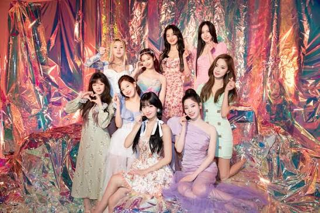
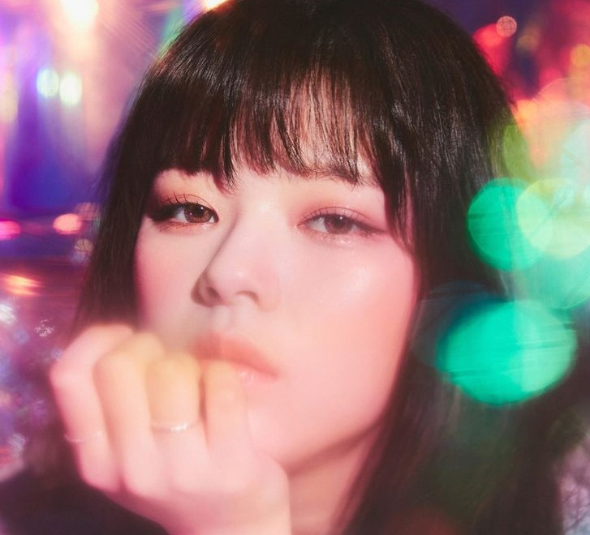

THE STORY BEGINS
Fecha de lanzamiento: 20 de octubre de 2015
Canciones: Like OOH-AHH, Do it again, Going Crazy, Truth, Candy Boy, Like a Fool.
K-POP · JYP ENTERTAINMENT

Nueve integrantes, una energía única y una historia llena de música, amistad y momentos inolvidables.
Conoce a TWICETWICE es un grupo femenino de K-pop formado por JYP Entertainment. El grupo debutó en 2015 después de participar en el programa de supervivencia Sixteen.
Desde su debut, TWICE se ha destacado por sus canciones pegadizas, sus coreografías y la personalidad de sus integrantes. Su nombre representa la idea de conquistar al público dos veces: una vez a través de los oídos y otra a través de los ojos.
A lo largo de su carrera, TWICE ha experimentado con diferentes estilos musicales, pasando por conceptos coloridos y divertidos hasta canciones más maduras y elegantes.
Fecha de lanzamiento: 20 de octubre de 2015
Canciones: Like OOH-AHH, Do it again, Going Crazy, Truth, Candy Boy, Like a Fool.
Fecha de lanzamiento: 25 de abril de 2016
Canciones: CHEER UP, Precious Love, Touchdown, Tuk Tok, Woohoo, My Headphones on, I'm gonna be a star.
Fecha de lanzamiento: 24 de octubre de 2016
Canciones: TT, 1 to 10, Ponytail, Jelly Jelly, Pit-a-Pat, Next Page, One in a Million.
Fecha de lanzamiento: 20 de febrero de 2017
Canciones: KNOCK KNOCK, Ice Cream, TT, 1 to 10, Ponytail, Jelly Jelly, Pit-a-Pat, Next Page, One in a Million.
Fecha de lanzamiento: 15 de mayo de 2017
Canciones: SIGNAL, THREE TIMES A DAY, ONLY YOU, HOLD ME TIGHT, EYE EYE EYES, SOMEONE LIKE ME.
Fecha de lanzamiento: 30 de octubre de 2017
Canciones: LIKEY, TURTLE, MISSING U, WOW, FFW, DING DONG, 24/7, LOOK AT ME, ROLLIN', LOVE LINE, DON'T GIVE UP, YOU IN MY HEART, JALJAYO GOOD NIGHT.
Fecha de lanzamiento: 11 de diciembre de 2017
Canciones: Heart Shaker, Merry & Happy, LIKEY, TURTLE, MISSING U, WOW, FFW, DING DONG, 24/7, LOOK AT ME, ROLLIN', LOVE LINE, DON'T GIVE UP, YOU IN MY HEART, JALJAYO GOOD NIGHT.
Fecha de lanzamiento: 9 de abril de 2018
Canciones: What is Love?, SWEET TALKER, HO!, DEJAVU, SAY YES, STUCK.
Fecha de lanzamiento: 9 de julio de 2018
Canciones: Dance The Night Away, CHILLAX, Shot thru the heart, What is Love?, SWEET TALKER, HO!, DEJAVU, SAY YES, STUCK.
Fecha de lanzamiento: 5 de noviembre de 2018
Canciones: YES or YES, SAY YOU LOVE ME, LALALA, YOUNG & WILD, SUNSET, AFTER MOON, BDZ (Korean Ver.).
Fecha de lanzamiento: 12 de diciembre de 2018
Canciones: The Best Thing I Ever Did, YES or YES, SAY YOU LOVE ME, LALALA, YOUNG & WILD, SUNSET, AFTER MOON, BDZ (Korean Ver.).
Fecha de lanzamiento: 22 de abril de 2019
Canciones: FANCY, STUCK IN MY HEAD, GIRLS LIKE US, HOT, TURN IT UP, STRAWBERRY.
Fecha de lanzamiento: 23 de septiembre de 2019
Canciones: Feel Special, RAINBOW, GET LOUD, TRICK IT, LOVE FOOLISH, 21:29, BREAKTHROUGH (Korean Ver.).
Fecha de lanzamiento: 1 de junio de 2020
Canciones: MORE & MORE, OXYGEN, FIREWORK, MAKE ME GO, SHADOW, DON'T CALL ME AGAIN, SWEET SUMMER DAY.
Fecha de lanzamiento: 26 de octubre de 2020
Canciones: I CAN'T STOP ME, HELL IN HEAVEN, UP NO MORE, DO WHAT WE LIKE, BRING IT BACK, BELIEVER, QUEEN, GO HARD, SHOT CLOCK, HANDLE IT, DEPEND ON YOU, SAY SOMETHING, BEHIND THE MASK.
Fecha de lanzamiento: 11 de junio de 2021
Canciones: Alcohol-Free, First Time, Scandal, Conversation, Baby Blue Love, SOS, CRY FOR ME (English Ver.).
Fecha de lanzamiento: 12 de noviembre de 2021
Canciones: SCIENTIST, MOONLIGHT, ICON, CRUEL, REAL YOU, F.I.L.A. (Fall in Love Again), LAST WALTZ, ESPRESSO, CACTUS, PUSH & PULL, HELLO, 1, 3, 2, CANDY, The Feels.
Fecha de lanzamiento: 26 de agosto de 2022
Canciones: Talk that Talk, Queen of Hearts, Basics, Trouble, Brave, Gone, When We Were Kids.
Fecha de lanzamiento: 10 de marzo de 2023
Canciones: SET ME FREE, MOONLIGHT SUNRISE, GOT THE THRILLS, BLAME IT ON ME, WALLFLOWER, CRAZY STUPID LOVE, SET ME FREE (ENG).
Fecha de lanzamiento: 23 de febrero de 2024
Canciones: I GOT YOU, ONE SPARK, RUSH, NEW NEW, BLOOM, YOU GET ME.
Fecha de lanzamiento: 6 de diciembre de 2024
Canciones: Strategy (feat. Megan Thee Stallion), Kiss My Troubles Away, Like It Like It, Sweetest Obsession, Keeper, Magical, Strategy.
Fecha de lanzamiento: 11 de julio de 2025
Canciones: FOUR, THIS IS FOR, OPTIONS, MARS, RIGHT HAND GIRL, PEACH GELATO, HI HELLO, BATTITUDE, DAT AHH DAT OOH, LET LOVE GO, G.O.A.T., TALK, SEESAW, HEARTBREAK AVENUE.
Fecha de lanzamiento: 10 de octubre de 2025
Canciones: TWICE - 10th Anniversary Special Album.
Nombre real: Im Na-yeon
Fecha de nacimiento: 22 de septiembre de 1995
Lugar de nacimiento: Seúl, Corea del Sur
Nacionalidad: Surcoreana
Función en TWICE: Vocalista, bailarina y centro.

Nombre real: Yoo Jeong-yeon
Fecha de nacimiento: 1 de noviembre de 1996
Lugar de nacimiento: Suwon, Corea del Sur
Nacionalidad: Surcoreana
Función en TWICE: Vocalista.
Nombre real: Hirai Momo
Fecha de nacimiento: 9 de noviembre de 1996
Lugar de nacimiento: Kyotanabe, Kioto, Japón
Nacionalidad: Japonesa
Función en TWICE: Bailarina principal, vocalista y rapera.
Nombre real: Minatozaki Sana
Fecha de nacimiento: 29 de diciembre de 1996
Lugar de nacimiento: Osaka, Japón
Nacionalidad: Japonesa
Función en TWICE: Vocalista.
Nombre real: Park Ji-hyo
Fecha de nacimiento: 1 de febrero de 1997
Lugar de nacimiento: Guri, Gyeonggi, Corea del Sur
Nacionalidad: Surcoreana
Función en TWICE: Líder y vocalista principal.
Nombre real: Myoui Mina
Fecha de nacimiento: 24 de marzo de 1997
Lugar de nacimiento: San Antonio, Texas, Estados Unidos
Nacionalidad: Japonesa
Función en TWICE: Bailarina principal y vocalista.
Nombre real: Kim Da-hyun
Fecha de nacimiento: 28 de mayo de 1998
Lugar de nacimiento: Seongnam, Gyeonggi, Corea del Sur
Nacionalidad: Surcoreana
Función en TWICE: Rapera principal y vocalista.
Nombre real: Son Chae-young
Fecha de nacimiento: 23 de abril de 1999
Lugar de nacimiento: Seúl, Corea del Sur
Nacionalidad: Surcoreana
Función en TWICE: Rapera principal y vocalista.
Nombre real: Chou Tzuyu
Fecha de nacimiento: 14 de junio de 1999
Lugar de nacimiento: Tainan, Taiwán
Nacionalidad: Taiwanesa
Función en TWICE: Bailarina, vocalista y visual.